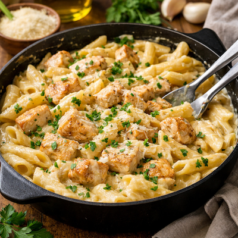

Facile
Pâtes crémeuses au poulet
Des pâtes gourmandes avec une sauce crémeuse à l’ail et au parmesan.
Voir la recetteFiltre par type de plat, niveau ou temps de préparation.
Des pâtes gourmandes avec une sauce crémeuse à l’ail et au parmesan.
Voir la recetteUn cheesecake frais, crémeux et légèrement acidulé avec un biscuit croquant.
Voir la recetteTomates, concombres, feta, olives… la salade fraîche par excellence.
Voir la recetteUn grand classique mijoté, riche en saveurs et idéal pour les grandes tablées.
Voir la recetteParfait pour un brunch du dimanche, simple et très instagrammable.
Voir la recetteLa Penne al Pomodoro est un grand classique de la cuisine italienne.
Voir la recette
Un burger maison gourmand avec steak juteux, fromage fondant et sauce rapide faite maison.
Voir la recetteUn poulet crème et champignon maison gourmand avec une sauce savoureuse.
Voir la recette
Un saumon et une sauce maison gourmand avec du citron.
Voir la recetteRecette de poulet miel moutarde rapide au four, sauce caramélisée prête en 30 minutes.
Voir la recetteRecette de bowl poulet avocat riz rapide, complet et savoureux, prêt en 20 minutes.
Voir la recette